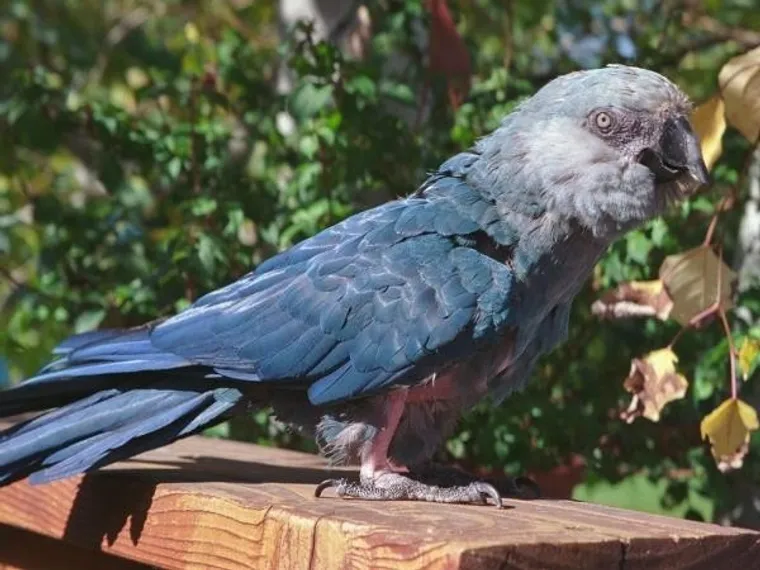
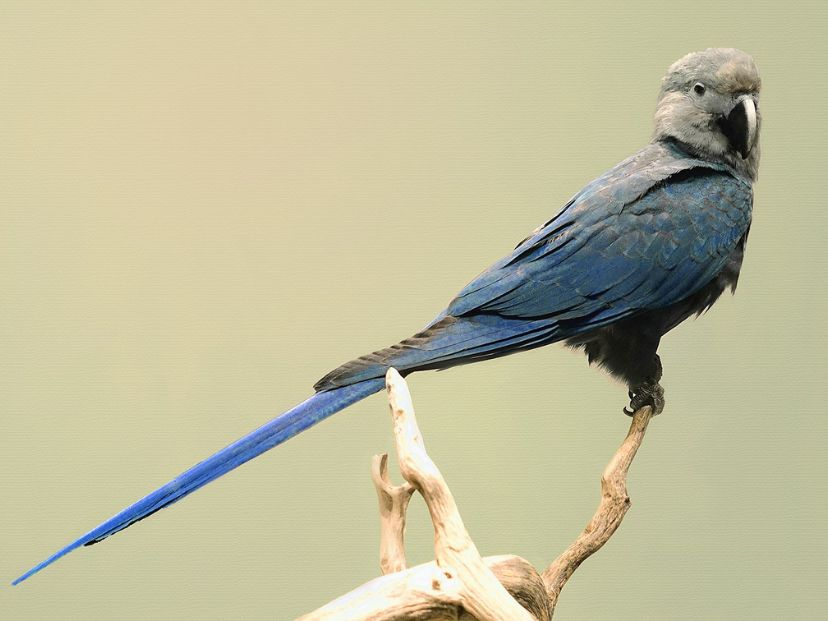
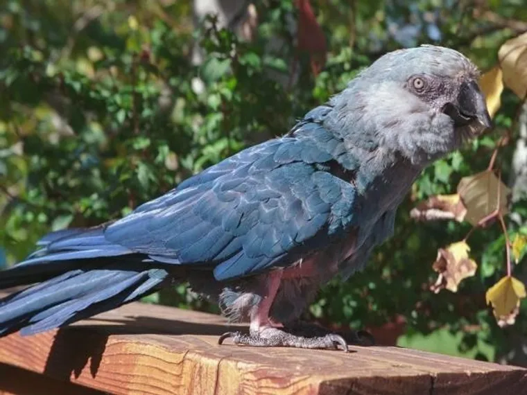
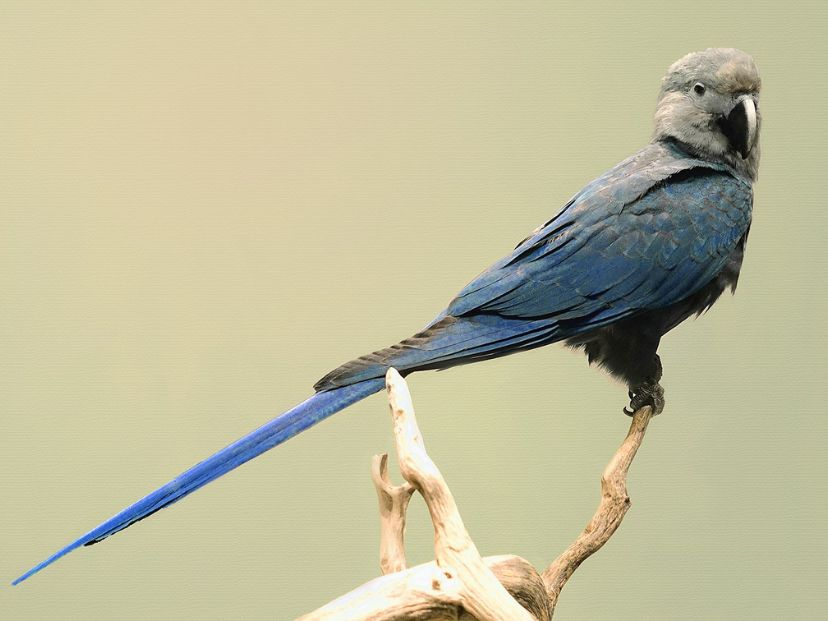

El Guacamayo de Spix, también conocido como Guacamayo de Spix o Ara Spix, es un ave que se alimenta principalmente de frutas, nueces, semillas y corteza de árboles. Su dieta incluye una variedad de frutas tropicales, como guaraná, mangos, y frutos de palma, además de hojas y semillas de diversas especies de plantas. En su hábitat natural, estos guacamayos son conocidos por su habilidad para manipular los frutos con su fuerte pico curvado. En cautiverio, se les alimenta con una dieta equilibrada que incluye frutas frescas, semillas, y pellets especialmente formulados para aves exóticas, garantizando que reciban todos los nutrientes esenciales.
El Guacamayo de Spix es originario del noreste de Brasil, específicamente de la región de la caatinga, un tipo de bosque seco y arbustivo tropical. Esta especie se encontraba en áreas cercanas al río São Francisco, donde anidaban en los árboles altos y se alimentaban de la vegetación circundante. Sin embargo, debido a la deforestación y la caza ilegal, su hábitat ha sufrido una grave disminución, lo que llevó a la especie al borde de la extinción. A pesar de su desaparición en la naturaleza, algunos esfuerzos de conservación han intentado reintroducirlos en áreas protegidas para restaurar su población en su hábitat original.
El Guacamayo de Spix fue declarado extinto en la naturaleza en el año 2000 debido a la pérdida de su hábitat y la caza furtiva. Sin embargo, gracias a esfuerzos de conservación internacionales, como el programa de cría en cautiverio y la reintroducción en su hábitat natural, la especie ha tenido un pequeño repunte en los últimos años. En el 2018, un grupo de aves criadas en cautiverio fue liberado en el Parque Nacional de la Caatinga, en Brasil. Aunque los desafíos siguen siendo enormes, estos esfuerzos representan una esperanza para la recuperación de la especie en su entorno original, siempre que se continúen las iniciativas de protección de su hábitat y la lucha contra la caza ilegal. Estos son solo algunos aspectos destacados sobre el Guacamayo de Spix, una especie que sigue siendo objeto de esfuerzos dedicados para su conservación y eventual recuperación.
El Guacamayo de Spix (Cyanopsitta spixii), también conocido como el Guacamayo azul de Spix, es una especie de loro que fue descubierta por el naturalista alemán Johann Baptist von Spix en 1819, de ahí su nombre. Este hermoso ave, de un vibrante color azul claro con toques de gris y blanco en la cara, es originaria de Brasil, específicamente de la región semiárida de la caatinga. En la naturaleza, el Guacamayo de Spix habitaba las copas de los árboles, en áreas cercanas al río São Francisco, donde se alimentaba de una dieta variada compuesta principalmente por frutas, semillas y corteza.
Desafortunadamente, la combinación de la destrucción de su hábitat por la deforestación, la caza ilegal y el comercio de mascotas llevó a esta especie al borde de la extinción. Para principios del siglo XXI, el Guacamayo de Spix fue declarado extinto en la naturaleza, aunque aún existían ejemplares en cautiverio. Sin embargo, gracias a esfuerzos de conservación como programas de cría en cautiverio y la reintroducción de estas aves en su entorno natural, la especie ha comenzado a recibir atención global. En 2018, un grupo de Guacamayos de Spix fue liberado con éxito en el Parque Nacional de la Caatinga, y aunque los desafíos son grandes, los esfuerzos para salvar a esta majestuosa ave continúan, dando esperanza para su recuperación.
La historia del Guacamayo de Spix es un testimonio de la importancia de la conservación de especies y la preservación de los hábitats naturales, un recordatorio de cómo las acciones humanas pueden tener un impacto profundo en la biodiversidad, pero también de cómo, con la dedicación adecuada, es posible revertir el daño y restaurar a estas criaturas en su entorno original.
El guacamayo de Spix es una especie extremadamente rara y protegida. Para garantizar su bienestar y la conservación de su hábitat, sigue estas recomendaciones al visitarlo en la reserva:
- Mantén la distancia: Observa sin acercarte demasiado. Son aves sensibles y cualquier alteración en su entorno puede afectar su comportamiento.
- No los alimentes: Su dieta es específica y cualquier alimento no natural puede ser perjudicial para su salud.
- Evita hacer ruido: Son aves cautelosas y pueden asustarse fácilmente. Mantén un tono de voz bajo y respeta la tranquilidad del lugar.
- No intentes tocarlos ni perseguirlos: Aunque puedan parecer curiosos, es fundamental evitar cualquier tipo de interacción física.
- Respeta los senderos y áreas designadas: Esto ayuda a minimizar el impacto humano en su hábitat y contribuye a su protección.